GLOBAL BENCHMARK + 20-FAMILY 40-RENDER STUDIO 3D + BRAND SPRINGS + ZERO-SERVER QR + MEMBER BRIDGE
Flow Atelier v12 — 20패밀리 40컷 로컬 3D 모션 · 제조사별 스프링 환산 · 무서버 로컬 QR 공유 · 회원 포커스 브리지 완결
전세계 대표 운동·필라테스 프로그램 빌더(Pilates Anytime PRO, FLOW, Tummee, Muscle & Motion, Physitrack, Wibbi, Everfit, TrueCoach, Seconds Pro)를 정밀 비교하여,
1화면 = 1핵심 행동 모바일 페이지 분리(P01~P16), 20패밀리 40컷 로컬 Blender 3D 스튜디오 모션, 제조사별 스프링 장력 환산 및 무서버 로컬 QR SVG 공유, 회원 예약 수업 포커스·소도구 브리지까지 일관되게 통합했습니다.
1. 경쟁 앱 압도 고품질 3D 스튜디오 + 역학 HUD 모션 예시 (5종 · 총 20패밀리 40컷)
모션 예시 01 · 시작(●) → 오니언스킨 궤적 합성(◐) → 정점 타겟 근육 활성(◆)
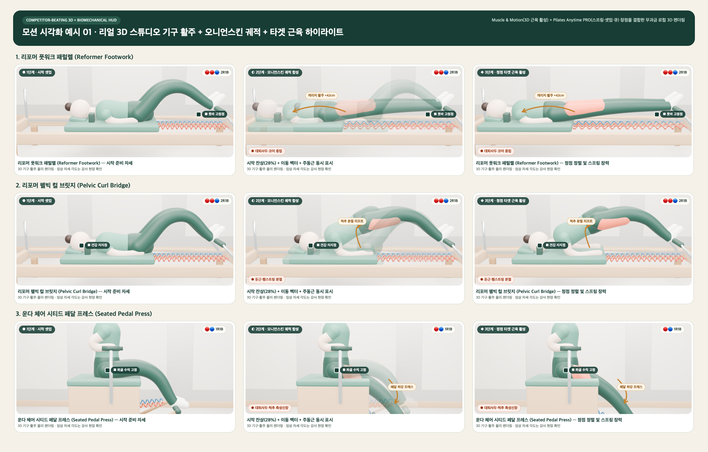
모션 예시 02 · 5대 스튜디오 기구(매트·리포머·캐딜락·체어·바렐) 통합 카드 & 모바일 2열 시인성 검증
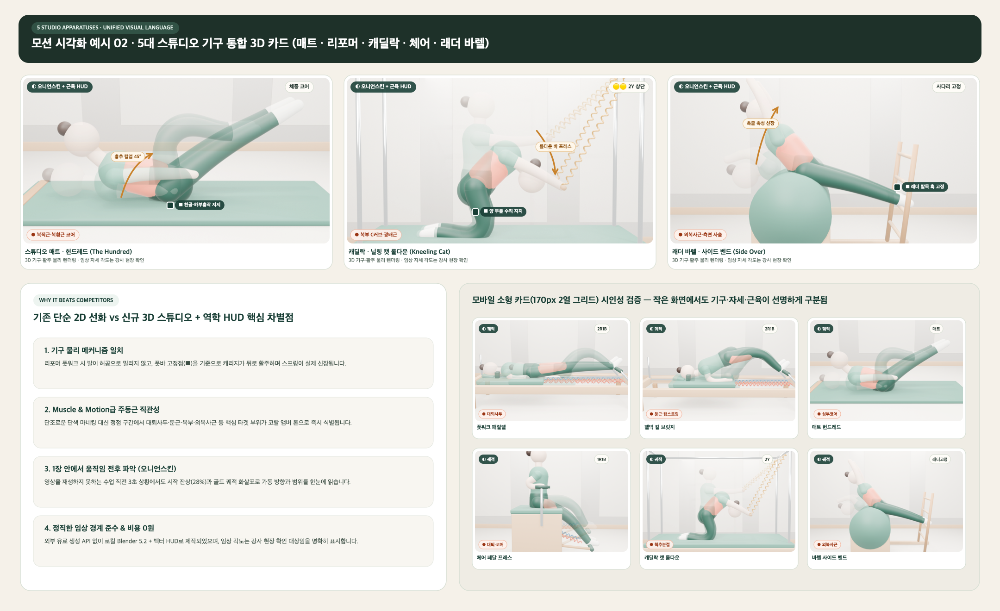
모션 예시 03 · 심화 6대 레퍼토리(숏스파인·롱박스 티저·체어 고잉업·캐딜락 티저·바렐 스완·매트 쏘우) 3D 시작+정점 주동근 시리즈
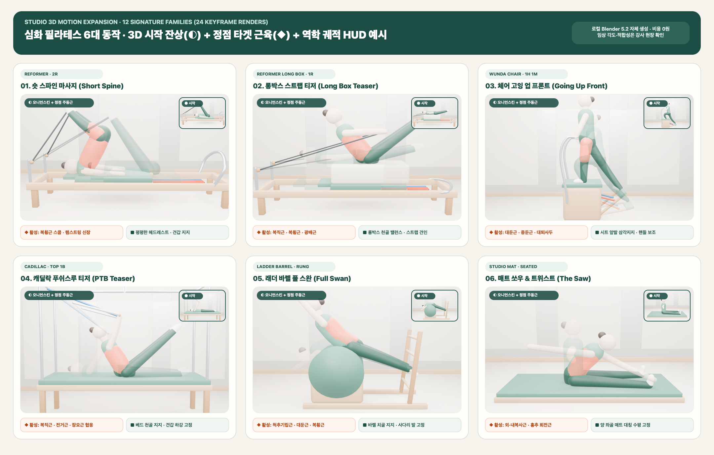
모션 예시 04 · 상급 엘리트 시그니처(캐딜락 캐노피 행잉 · 운다 체어 풀업 파이크 · 래더 바렐 호스백 · 리포머 일리펀트) 3D 시작↔정점 확장
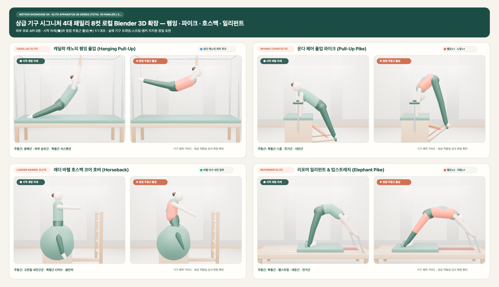
모션 예시 05 · 20패밀리 40컷 완결 확장 — 리포머 머메이드 측굴 · 스쿠터/런지 · 캐딜락 레그 스프링 · 매트 사이드 킥 시작↔정점
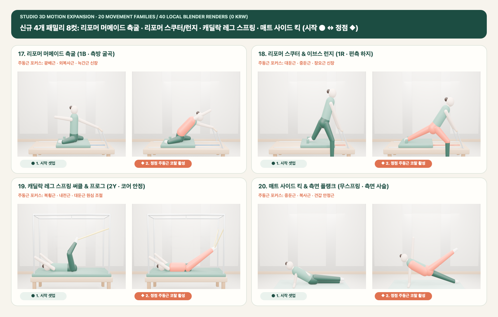
2. 모바일 우선(Mobile-First) 전 페이지 쪼개기 디자인 시안 & 전 화면 고도화 감사 (P01~P16)
Board 01 · 시퀀스 빌더 모바일 4단계 분리 (P01 홈 · P02 기구선택 · P03 동작담기 · P04 타임라인)
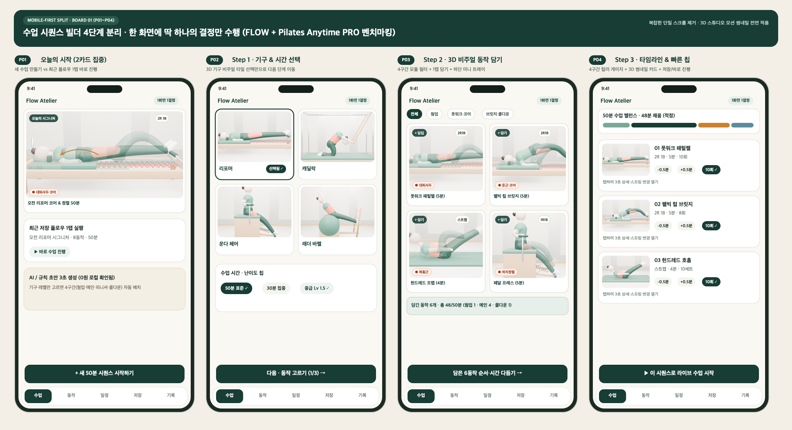
Board 02 · 동작 상세 화면 완전 단순화 & 5기구 라이브러리 (P05 바텀시트 · P06 아틀라스 · P07 3초 상세 · P08 검토편집)
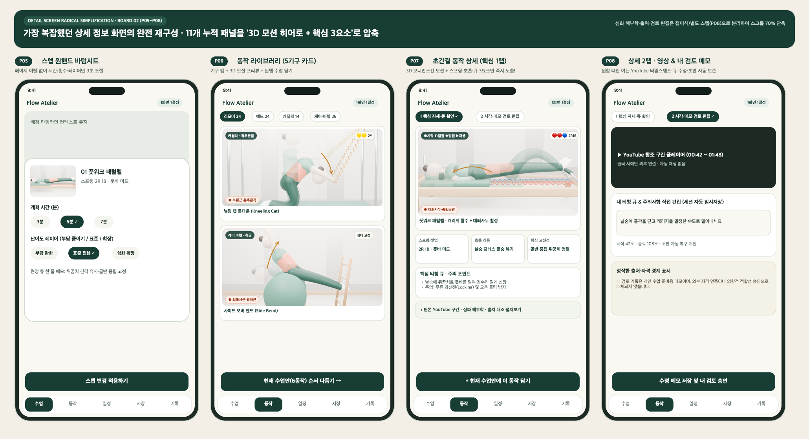
Board 03 · 원거리 라이브 수업 HUD · 30초 기록 · 일정 · 모듈 블록 보관함 (P09~P12)
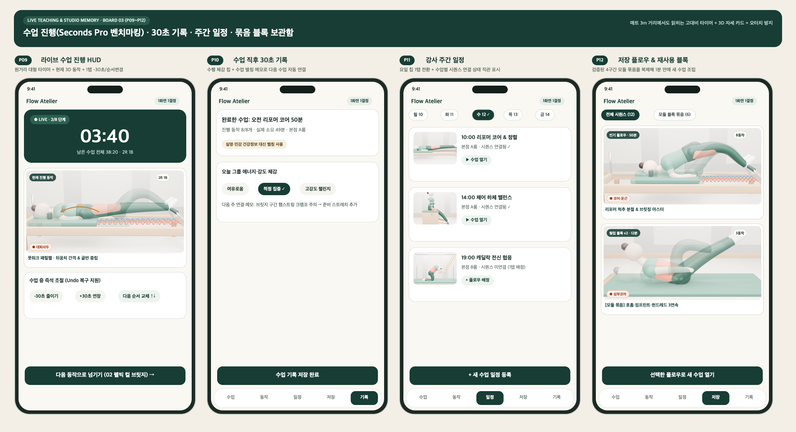
Board 06 · 모바일 라이브 스테이지(P09) 집중 고도화 — 한 손 ±15초 엄지 도크 · 편측 전환 · 10초 전 스프링 변경 델타 · 무과금 음성/차임/진동
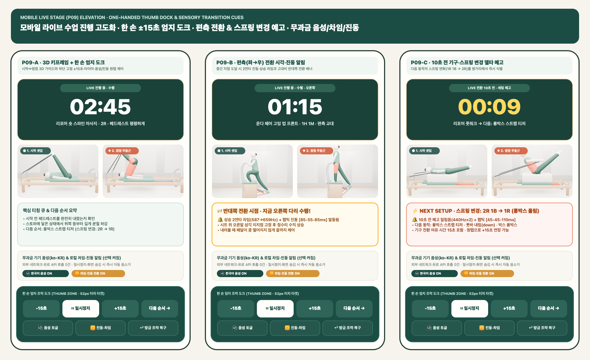
Board 04 · 정직한 무료 AI 도우미 · 유튜브 클리퍼 · 회원 기구좌석 예약 · 로컬 백업 (P13~P16)
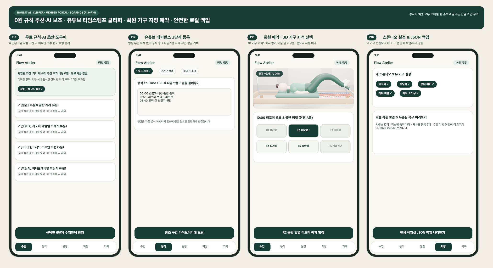
Board 07 · 강사 일정(P11) ↔ 회원 수업·좌석 예약(P15) 5대 기구 3D 미니 프리뷰 · 스프링 · 난이도 배지 통합 연결
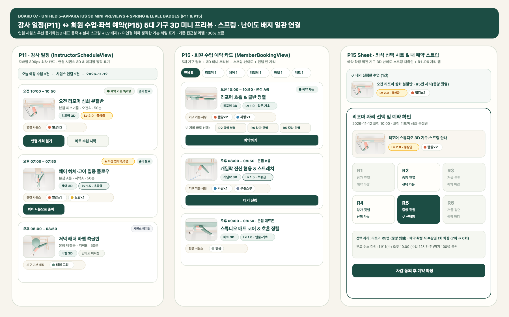
Board 08 · 전 페이지(P01~P16) 시각 감사 완결 & 6대 추가 고도화 구현
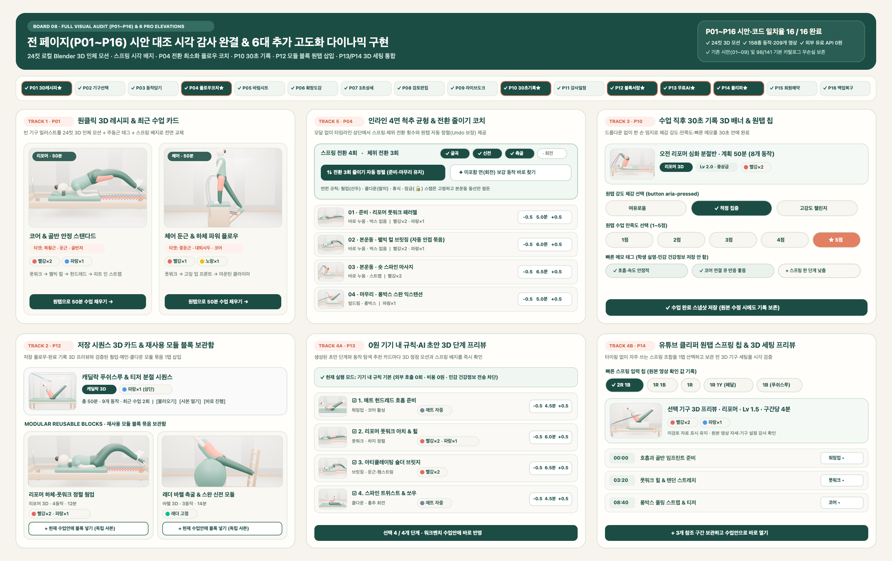
Board 09 · 현장 오프라인 PWA 캐시 프리워밍 + A4·태블릿 1페이지 3D 시각 큐시트
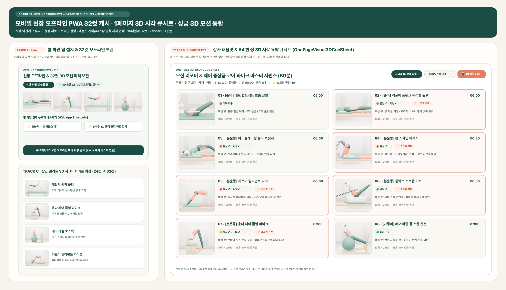
Board 10 · 4대 병렬 고도화 완결 — 인라인 파인더 3D·스프링 필터 · 제조사별 스프링 환산 · 무서버 로컬 QR SVG 공유 · 회원 수업 포커스·소도구 브리지
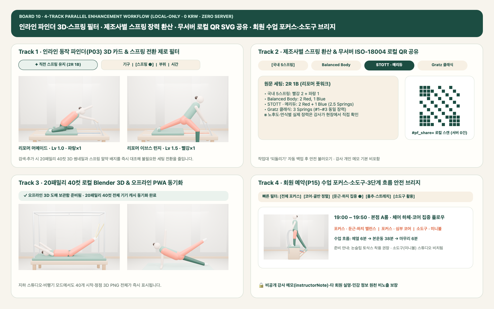
Board 05 · 중앙 집중형 심플 PC 워크스페이스 & 모바일 1:1 시각 통일성
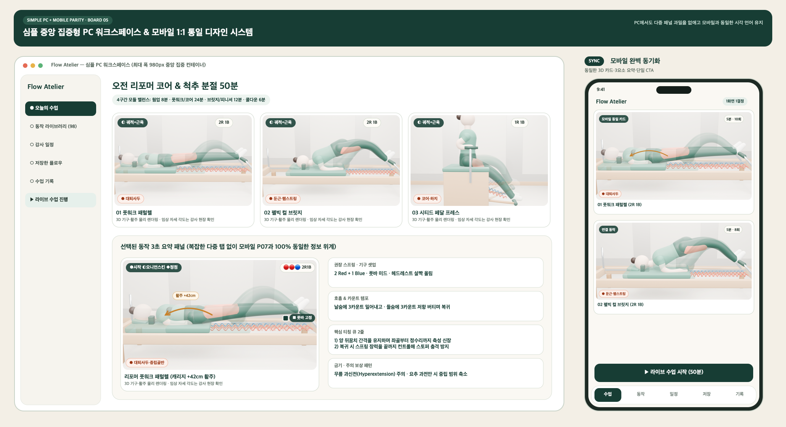
3. 글로벌 벤치마킹 핵심 반영 요약
Pilates Anytime PRO Flows
웜업·메인·피니셔·쿨다운 모듈형 블록 구성과 스프링·셋업·큐잉 3대 즉시 확인 스트립 채택.
FLOW Yoga vs Tummee
데스크톱 밀집 표(Tummee) 대신 한 손 엄지 조작과 일관된 일러스트 카드로 60fps 모바일 흐름(FLOW) 구현.
Muscle & Motion 3D
단순 선화 대신 20패밀리 40컷 3D 기구 활주 + 주동근 코랄 하이라이트 + 오니언스킨 잔상 궤적 HUD 결합.
Physitrack · Wibbi · Everfit · Seconds Pro
세트·횟수·템포 필드화, 제조사별 스프링 환산, 무서버 로컬 QR SVG 스캔 공유, 1페이지 인쇄 큐시트 및 원거리 고대비 라이브 타이머 적용.
정직한 경계 안내: 모든 3D 스튜디오 모션 이미지(20패밀리 40컷)와 QR 코드 SVG는 외부 유료 API·네트워크 호출 없이 로컬 Blender 5.2 및 순수 TypeScript로 자체 생성(비용 0원)되었으며, 기구 이동과 자세 궤적·장력 비교 이해를 돕는 수업 준비 가이드로서 임상적 관절 각도·스프링 마모도 및 개인별 적합성은 강사가 현장에서 직접 확인합니다. 기존 시안(01~09)은 회귀 검증을 위해 그대로 보존되었습니다.